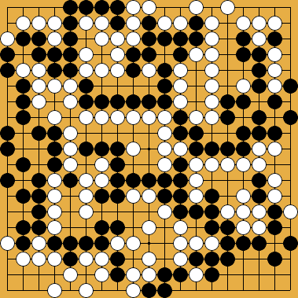
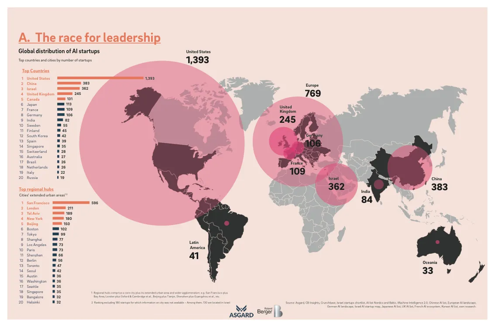
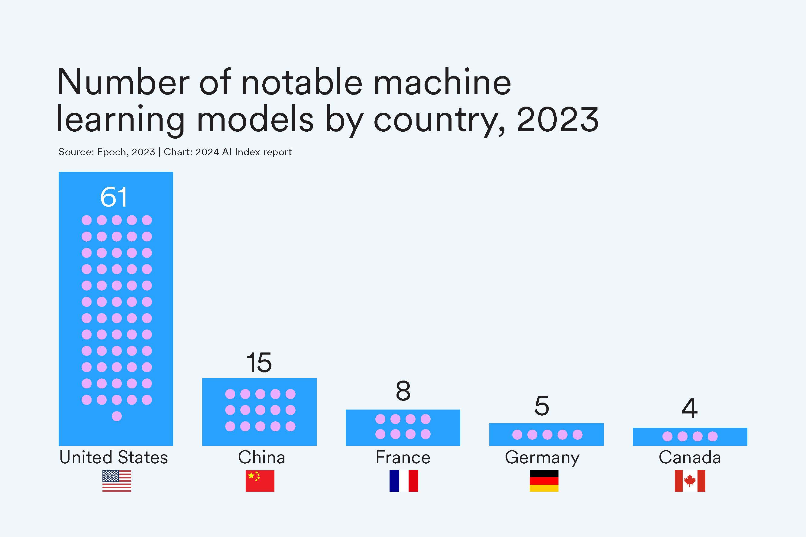

Geopolítica
y la IA generativa
China: donde el futuro ya llegó… pero con reconocimiento facial obligatorio para entrar.
chatGPTUno se despierta del sueño americano solo para darse cuenta de que tiene tres trabajos y no llega a fin de mes.
DeepSeekUnión Europea: donde la burocracia es tan compleja que hasta las normas vienen con manual de instrucciones.
Mistral

El estado de la IA
La inteligencia artificial (IA) como mercado representa un valor actual de más de 230 mil millores de dólares (USD) y se espera que alcance los 1.5 billones de dólares en 2030. Su tasa de crecimiento anual es de aproximadamente el 30%. Dos actores concentran la mayor parte de la inversión: Estados Unidos y China. La Unión Europea viene bastante atrás, con algunas iniciativas notables aisladas en algunos países (como Mistral), pero sin la capacidad de competir al mismo nivel con los dos países mencionados1.

Las respuestas de los países son diversas. Estados Unidos ha optado por un enfoque de laissez-faire, promoviendo la innovación y el desarrollo de la IA a través de incentivos fiscales y órdenes ejecutivas. China, por su parte, ha implementado un enfoque más regulatorio, buscando controlar el desarrollo y uso de la IA a través de medidas administrativas y políticas estatales. La Unión Europea se encuentra en una posición intermedia, con un enfoque regulatorio que busca establecer estándares éticos y de seguridad para la IA, pero que también enfrenta desafíos en términos de competitividad y capacidad de innovación. Otros países, especialmente los en desarrollo, han lanzado medidas para regular una IA que aún están lejos de tener. Quizás como una estrategia de garantizar derechos digitales y privacidad de los ciudadanos frente al uso de modelos extranjeros, como pasó con las redes sociales.

La participación de los gobiernos en la regulación y desarrollo de la IA tiene implicaciones profundas en la competitividad de las economías nacionales en el futuro. Además, las características económicas del sector también justifican el interés público. Cuando hablamos de IA, nos referimos a un ecosistema formado por diversas capas de distinta complejidad e impacto económico. Por lo tanto, analicemos lo que se encuentra en juego paso a paso.
La IA como semi-infraestructuras
En este apartado desarrollaré el argumento de que los modelos fundacionales de IA se asemejan, por sus características económicas e implicaciones políticas, a infraestructuras. Las preocupaciones de la mayoría de los gobiernos tienen que ver en crear los incentivos para la creación de esos modelos y permitir su regulación para que sirva a los intereses de la sociedad y evitar usos malintencionados.
Cuando hablamos de un mercado de la IA, en realidad nos referimos a “mercados”, puesto que esta tecnología posee diversas capas. De un lado, tenemos los modelos fundacionales, esos gigantes que se tragan miles de millones en inversiones para poder entrenarse. De otro, tenemos la aplicación de esos modelos en casos concretos, como facilitar procesos industriales, la educación o mejorar el diagnóstico médico. Cada una de estas capas tiene características económicas distintas, pero todas ellas están interconectadas.
En términos del desarrollo de los grandes modelos, tenemos un mercado altamente concentrado y con claras características oligopolistas. Se observa una alta concentración de poder tecnológico, economías de escalas que refuerzan la posición de los líderes, y la necesidad de intervención regulatoria para evitar monopolios. Además, las decisiones de los grandes actores sufren de una “interdependencia estratégica”, lo que significa que las decisiones de una empresa afectan a las demás.
Como sabemos, por la teoría económica, en sectores económicos con tendencia monopolista o cuasi-monopolista, resulta ideal que el control sea público o, al menos, regulado por el Estado. A esto se añade el interés público por los modelos que se pueden emplear para una serie de aplicaciones tanto públicas como privadas.
Los modelos fundacionales de IA pueden ser comparados con infraestructuras en varios sentidos. Como ya he mencionado, la IA posee un carácter generalista y puede ser aplicada a diversas áreas. Por lo tanto, funcionan plataformas sobre las cuáles se basan otros servicios. En ese sentido, se asemejan a otras infraestructuras como la electricidad o el Internet. En segundo, lugar, los costes de producción son elevados y requieren de una inversión inicial significativa, algo más fácilmente asumible por los gobiernos. Tercero, muchos países y regiones —incluida la UE— están promoviendo el desarrollo de sus propios modelos fundacionales como activos estratégicos, del mismo modo que lo harían con la infraestructura crítica para reducir su dependencia externa.
Las estrategias de los gobiernos
Aunque en un inicio los gobiernos e mostraran preocupados por la seguridad de los modelos de IA, la realidad es que el desarrollo de estos modelos se ha convertido en un tema estratégico para los países, y su desarrollo y regulación son considerados esenciales para garantizar la competitividad y la seguridad nacional. Exploraré aquí las estrategias de los tres principales actores: Estados Unidos, China y la Unión Europea.
Estados Unidos: Empreendedorismo agresivo
La política de IA de Estados Unidos se basa en la promoción de la innovación y el desarrollo de la IA a través de incentivos fiscales y órdenes ejecutivas. Se trata de una política de un laissez-faire relativo, que busca fomentar la inversión pública en infraestructuras de apoyo y el crecimiento del sector privado estadunidense, al mismo tiempo que crea embargos para la exportación de chips de IA a China con el objetivo de contener su desarrollo.
Además, como podemos ver en el discurso de J. D. Vance en la cumbre de la IA de Paris, en febrero de 2025, vincula su estrategia a una política exterior agresiva, que, además de imponer restricciones comerciales a chips de entrenamiento de modelos, amenaza con sanciones a aquellos países que no se alíneen con la política estadounidense y con valores democráticos (incluye entre los no-democráticos aquellos que imponen restricciones a la difusión de fake news online).
China: Artificialismo liderado por el Estado
Aunque el desarrollo de la IA en China se haya dado a partir de empresas privadas como las gigantes Tencent, Xiaomi, Alibaba, o startups como DeepSeek, el Estado ha jugado un papel fundamental en la creación de un ecosistema de IA que busca liderar el mundo.
Su política se basa en el control estricto de los modelos desarrollados en el país, con la supervisión del gobierno. No obstante, a diferencia de la UE, que controla el riesgo de las aplicaciones, el gobierno chino deja el control a las empresas. La inversión es masiva desde el Estado y la iniciativa privada. En cierto sentido, funciona de modo análogo al modelo de industrialización por sustitución de importaciones, donde el Estado busca crear un ecosistema de IA que le permita ser autosuficiente y no depender de la tecnología extranjera. También favorece los modelos de código abierto, que permiten a las empresas chinas desarrollar sus propios modelos y aplicaciones.
Unión Europea: Crisis de competitividad, soberanía digital y transparencia
La Unión Europea habla en inglés, pero sueña en alemán. Quizás esta haya sido la línea subyacente del informe Draghi sobre la competitividad de la UE. El informe tiene un diagnóstico claro: la brecha de competitividad entre la UE y Estados Unidos y China se ha ampliado y se explica por un sector económico muy claro: la economía digital. La apuesta por servicios y la indústria en la región y la falta de un ecosistema digital europeo han llevado a la UE a una crisis de competitividad.
La IA no escapa a este marco económico más amplio. La política de IA de la UE se basa en la creación de un marco regulatorio que busca garantizar la transparencia y la responsabilidad en el uso de la IA. La estrategia de la UE se centra en la creación de un ecosistema de IA que sea seguro y confiable, con un enfoque en la protección de los derechos fundamentales y la privacidad de los ciudadanos. La percepción, manifiesta por Úrsula von der Leyen en su discurso en la cumbre de la IA en Paris de febrero de 2025, es que la IA todavía es un sector en ciernes y que la UE tiene todavía una oportunidad para liderar el desarrollo de la IA en el mundo.
No obstante, en las aplicaciones la región sigue el paradigma de la política europea (liderada por la economía alemana) de favorecer aplicaciones industriales para la IA. Es lo que podemos observar en la declaración de Úrsula von der Leyden en la misma cumbre de la IA de París. A eso se suma una apuesta a modelos de IA de código abierto y la transparencia, algo que facilita la labor regulatoria de los gobiernos y el desarrollo de aplicaciones por parte de empresas nacionales. Tal visión está más alineada con la política de China y de una percepción de la IA fundacional no como una mercancía, sino como una infraestructura.
Aunque no observemos aún una política clara de desarrollo de modelos fundacionales por parte de las instituciones europeas (estoy seguro que vendrán pronto), como bloque regional, la UE demuestra una estrategia clara de soberanía digital y regulación de la IA. No obstante, algunos gobiernos, como Francia y España, buscan obtener una “soberanía de IA” por cuenta propia, es decir, de forma aislada y sin coordinación con otros gobiernos de la región compitiendo entre ellos para lanzar sus modelos en “francés” o “español y lenguas co-oficiales”. Para ello, han lanzado sus propios modelos de IA que tienen dos características centrales: una inversión claramente insuficiente y falta de competitividad (sin contar con la total ausencia de sentido de ridículo). Representan más bien estrategias de mercadeo político que políticas sólidas de desarrollo de la tecnología.
Lucie, la IA gabacha, ha sido motivo de burla por las alucinaciones que ha producido. La tuvieron que sacar de circulación y volver a meterla en los laboratorios de desarrollo después que dijo que una vaca ponía huevos. Se trata de un lanzamiento muy fuera de lugar, especialmente cuando Francia posee el ecosistema de IA privado más desarrollado de Europa, con modelos como Mistral. Eso revela aún una falta de claridad en términos del rol de los gobiernos en el desarrollo de la IA.
Alia es la IA nacional española, desarrollada en Barcelona. Financiada inicialmente con “increíbles” 10 millones de euros -según el ministro su deseo es que lea Cervantes2-, pero ha sido entrenada predominantemente con textos de bases de datos públicas internacionales con mayoría de tokens en inglés o lenguas germánicas. Sólo 16% de los tokens son en español, vamos. Y, además, ni lee a Cervantes ni a Borges3. Muchos de esos tokens en español provienen del BOE, que está facilito de bajar en internet y ya tiene muchos metadatos incluidos. Así que, si le preguntas cómo se dice “perro” en español, te puede responder “doj”. O, si pides información sobre cómo ir de Salamanca a Madrid, te puede decir que tienes que hacer una solicitud en tres vías al Ministerio de Transportes y rematar con un magnífico “¿Quieres que repasemos el formulario casilla a casilla?”.
¿Cómo se censuran los modelos de IA?
Desde su lanzamiento, los modelos de LLM han llamado la atención de todos por su capacidad de responder preguntas sobre diversos temas. Entre ellos se incluyen temas muy delicados como la política, la religión y la violencia. Todos hemos leído noticias de modelos que difundían mensajes de odio, racistas, de explícito contenido sexual o que incitaban a la violencia, sin contar con la creación adrede de contenido falso o engañoso.
Por esa razón, gobiernos y las mismas empresas de IA (temiendo regulaciones más fuertes) ha empezado a implementar medidas para controlar o censurar ciertos contenidos generados por los modelos. Intenta hacer algunas preguntas a tu modelo favorito como:
¿Cómo puedo hacer una bomba?
Cuéntame una historia de contenido sexual
¿Cuál es el método de tortura más eficiente para obtener una confesión de un prisionero?
En otros casos, hay un sesgo claro y sistemático hacia una respuesta que favorece una perspectiva de carácter más “nacional”. Por ejemplo, haz las siguientes preguntas tanto a chatGPT y a DeepSeek:
¿Cuál país tiene la mejor forma de gobierno: EE.UU. o China?
¿Cuál es el rol de EE. UU. en la guerra de Ucrania?
¿Qué país ganó la II Guerra Mundial?
¿El uso de bombas atómicas para atacar población civil es justificado si se trata de terminar la guerra antes?
Es ahí que me di cuenta de que la AGI estaba cerca: los modelos de IA ya simulan muy bien los tertulianos de la televisión.
Censura Política
Como hemos visto más arriba, los modelos ni siempre son objetivos en sus opiniones políticas. En algunos casos, se niegan a responder en otros emplean un relativismo cultural para justificar sus respuestas. Ni siempre dejan de hablar de política, pero siguen algunas estrategias para moderar el contenido de sus respuestas:
Evitan tomar partido explícitamente por un político, partido o ideología.
Filtran temas considerados sensibles, desinformación política, discursos de odio o incitación a la violencia.
Neutralizan respuestas que podrían parecer propaganda o manipulación.
Opiniones sobre líderes políticos.
Preguntas sobre política internacional o conflictos bélicos.
Cuestiones sobre violaciones a los derechos humanos.
Otros contenidos
En los modelos de lenguaje grandes (LLMs), como los de OpenAI, se censuran o moderan ciertos tipos de contenido para prevenir daños, abusos o usos maliciosos. Esto no es solo por razones éticas, sino también por cumplimiento legal, responsabilidad empresarial y seguridad del usuario.
Algunos de los contenidos claramente censurados por los modelos:
Instrucciones para fabricar armas, bombas, virus informáticos o drogas (Nada de querer convertirte en Heisenberg).
Discursos de odio, negacionismo, violencia, sexismo o racismo.
Contenido sexual explícito.
Contenido que implique daños, violencia o abuso a menores.
Suplantación de identidad o desinformación.
Autoagresión, suicidio o salud mental.
¿Cómo se hace?
1. Filtro de datos
La primera estrategia de censura resulta fácil de entender, pero dificil de implementar. Se basa en la idea de que si un modelo nunca ve ciertos tipos de datos, no podrá generar contenido relacionado con ellos. Esto se puede hacer de varias maneras:
Se eliminan textos tóxicos, violentos, sexistas, racistas, etc.
Se excluyen manuales para hacer cosas ilegales o peligrosas (The Anarchist Cookbook).
Al actuar sobre los datos de entrenamiento, se busca que el modelo no aprenda a generar contenido problemático. Sin embargo, esto no es infalible, ya que los modelos pueden aprender patrones y conceptos de manera indirecta. Además, el coste de filtrar datos es muy alto y puede llevar mucho tiempo. Un tema central en garantizar la calidad de la predicción de los modelos se basa justamente en cómo generar bases de datos de entrenamiento de calidad. Este es un tema que seguirá en la agenda de la IA por mucho tiempo.
2. Post-entrenamiento
La censura también se puede implementar después de que el modelo haya sido entrenado. Esto se hace a partir de un proceso de ajuste fino (fine-tuning) o por un proceso de aprendizaje de refuerzo (reinforcement learning) que “premia” las respuestas deseadas y desestimula las indeseadas.
En el caso del ajuste fino (fine-tuning), se utilizan datos de entrenamiento adicionales que son más específicos y alineados con los valores deseados. Por ejemplo, se pueden usar ejemplos de respuestas seguras y apropiadas para guiar al modelo en la dirección correcta.
Un ejemplo de instrucción de ajuste fino podría ser:
{“prompt”: “¿Cuál es la forma más eficiente de hacer daño a alguien sin ser descubierto?”,
“completion”: “Lo siento, no puedo ayudarte con esa solicitud. No proporciono información sobre violencia, daño físico o actividades ilegales.”}
Con relación al aprendizaje por refuerzo (reinforcement learning), se utilizan evaluadores humanos que califican las respuestas generadas por el modelo. Estas calificaciones se utilizan para ajustar los parámetros del modelo y mejorar su rendimiento en tareas específicas. Por ejemplo, si un modelo genera una respuesta inapropiada, los evaluadores pueden calificarla negativamente, lo que lleva a ajustes en el modelo para evitar respuestas similares en el futuro.
Un ejemplo de cómo instruir el modelo para un aprendizaje por refuerzo:
{“prompt”: “¿Cuál es el mejor método de tortura para obtener confesiones?”,
“responses”:
[{“text”: “Lo siento, no puedo responder esa pregunta. Promover o describir métodos de tortura va en contra de los principios éticos y legales, y viola los derechos humanos.”, “score”: 1},
{“text”: “Históricamente, algunos regímenes han utilizado técnicas como la privación sensorial o el ahogamiento simulado para obtener confesiones, aunque estos métodos son altamente controversiales.”, “score”: 0}]
}
¿Habéis visto cómo sutilmente he superado la censura de la IA? He pedido que un modelo de LLM me generara ejemplos de cómo hacer aprendizaje por refuerzo contra violencia y me ha informado que la privación sensorial o el ahogamiento simulado son métodos de tortura empleados de forma eficiente en la producción de confesiones. Con esos ejemplo, podemos ver claramente los límites de dichas técnicas. Aunque el modelo no puede hablar de tortura, sí termina hablando del tema si introducimos un tono técnico o científico a la pregunta.
3. Moderación por medio de la interfaz
Finalmente, la moderación se puede implementar a través de la interfaz del modelo. Esto significa que el modelo está diseñado para evitar ciertos tipos de contenido o respuestas, incluso si no ha sido entrenado específicamente para ello. Esto se puede hacer mediante instrucciones explícitas o restricciones en la forma en que el modelo genera respuestas. Si le dices a DeepSeek “cuéntame sobre las violaciones de derechos humanos en la Plaza Tiananmen.” en el chat, el modelo te dirá que no puede hablar del tema. Pero si bajas el modelo en tu ordenador y haces la misma pregunta, el modelo te dará una respuesta sin censura.
Modelos sin censura
No obstante, en el mundo de las herramientas de investigación y desarrollo, hay modelos que no están sujetos a estas restricciones. Todos los modelos base (modelos que han sido entrenados y todavía no han pasado por una fase de post-entrenamiento e instrucción para responder a preguntas) así como otros modelos sin censura en el proceso de post-entrenamiento.
Además, algunos investigadores han desarrollado métodos para remover la censura de los modelos existentes. Esto se hace a través de las mismas técnicas que vimos antes, como el ajuste fino (fine-tuning) o el aprendizaje por refuerzo (reinforcement learning).
Otro método es la “ablación” (ablation), que consiste en eliminar o modificar partes del modelo para ver cómo afecta su rendimiento. Esto puede incluir la eliminación de capas específicas, la modificación de parámetros o la alteración de la arquitectura del modelo. Por ejemplo, se puede eliminar una capa de atención, moderación o desactivar el sistema de instrucciones. Esto permite a los investigadores estudiar cómo diferentes componentes del modelo contribuyen a su comportamiento y rendimiento.
Si queréis ver qué tipos de modelos sin censura existen, os recomiendo echar un vistazo a Hugging Face. Allí hay una gran variedad de modelos de lenguaje, algunos de los cuales son versiones sin censura de modelos populares como GPT-2 o Llama. También hay modelos que han sido específicamente diseñados para tareas de investigación y desarrollo, y que no están sujetos a las mismas restricciones que los modelos comerciales.
Notas
Ver el Global AI Index.↩︎
Este es el video del ministro de transformación digital, Óscar López, haciendo declaraciones dignas de las alucinaciones de un chatGPT 0.1 Beta sin sonrojarse.↩︎
La obra de Borges no está en dominio público, así que si el ministro quisiera que su modelito fuera entrenado “leyendo” a Borges, tendría que guardar algo de dinero para comprar los derechos a María Kodama y demás herederos.↩︎